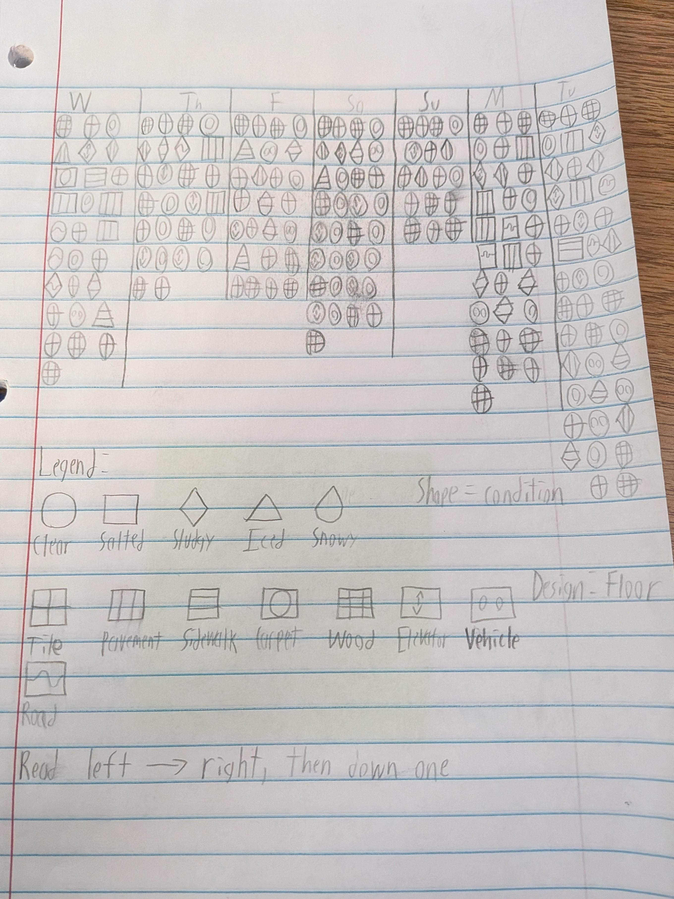

For Art 168 I made a short video about waking up and having a perfect "morning". It was inspired by the types of uneventful days you may have on a weekend or holiday, where the simple act of sleeping in and doing something mindless is all you need. The link can be found here.

For DIGIT 100, I was tasked with creating a week's worth of data based upon the Dear Data project. I chose to record what materials I walked upon, as well as their conditions based on the weather. You can see what days I went out, what days I stayed in, and how conditions changed as weather conditions and groundskeepers battled over control of the pavement and sidewalk.
Go back to my main page.